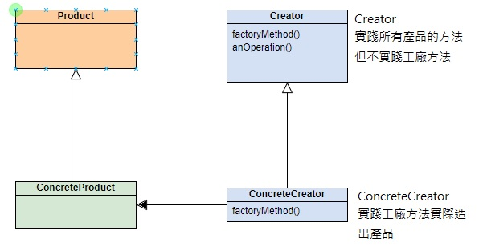
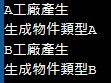
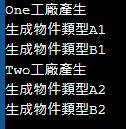

工廠和抽象工廠模式
Factory & Abstract Factory Pattern

概念
UML概念
實作工廠方法模式
實作
定義一個建立物件的介面，但由次類別決定實體化的類別為何者。工廠方法讓類別實作交由次類別決定
public class FactoryMethod { public static void main(String[] args) { Product theProduct =null; Factory factoryA =new FactoryA(); theProduct =factoryA.FactoryMethod(); Factory factoryB =new FactoryB(); theProduct =factoryB.FactoryMethod(); } } abstract class Product{} abstract class Factory { public abstract Product FactoryMethod(); } class ProductA extends Product{ public ProductA() { System.out.println("成物件類型A"); } } class ProductB extends Product{ public ProductB() { System.out.println("成物件類型B"); } } class FactoryA extends Factory{ public FactoryA() { System.out.println("A工廠產生"); } @Override public Product FactoryMethod() { return new ProductA(); } } class FactoryB extends Factory{ public FactoryB() { System.out.println("B工廠產生"); } @Override public Product FactoryMethod() { return new ProductB(); } }
輸出

實作抽象工廠方法模式
實作
提供一個介面，建立相關或相依物件的家族，而不需要明確指定具象類別
public class AbstractFactoryPattern { public static void main(String[] args) { SampleFactory Onefactory = new OneFactory(); Onefactory.CreateProductA(); Onefactory.CreateProductB(); SampleFactory Twofactory = new TwoFactory(); Twofactory.CreateProductA(); Twofactory.CreateProductB(); } } abstract class SampleProduct{} class ProductA1 extends SampleProduct{ public ProductA1() { System.out.println(生成物件類型A1"); } } class ProductB1 extends SampleProduct{ public ProductB1() { System.out.println(生成物件類型B1"); } } class ProductA2 extends SampleProduct{ public ProductA2() { System.out.println(生成物件類型A2"); } } class ProductB2 extends SampleProduct{ public ProductB2() { System.out.println(生成物件類型B2"); } } interface SampleFactory { SampleProduct CreateProductA(); SampleProduct CreateProductB(); } class OneFactory implements SampleFactory{ public OneFactory() { System.out.println("One工廠產生"); } @Override public SampleProduct CreateProductA() { return new ProductA1(); } @Override public SampleProduct CreateProductB() { return new ProductB1(); } } class TwoFactory implements SampleFactory{ public TwoFactory() { System.out.println("Two工廠產生"); } @Override public SampleProduct CreateProductA() { return new ProductA2(); } @Override public SampleProduct CreateProductB() { return new ProductB2(); } }
輸出
